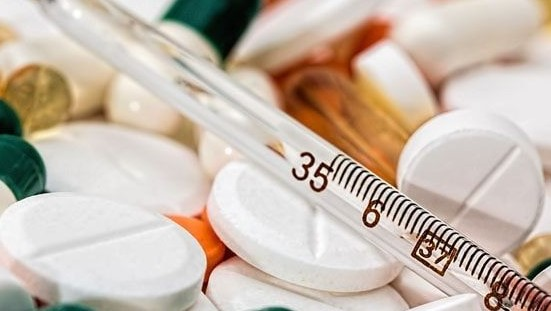

4 Langkah Cara Mengatasi Kecanduan Narkoba
Narkoba | 7 Januari 2019 | 15:15 WIB
Narkoba atau narkotika dan obat-obatan berbahaya menjadi salah satu zat yang bisa memberikan efek kecanduan pada pemakainya. Cara mengatasi kecanduan narkoba jadi semakin sulit bila pemakainya sudah menggunakan zat berbahaya tersebut dalam dosis yang tinggi dan setiap hari.
Mulanya, sebagian besar pecandu hanya iseng saat memakai. Namun karena dampak yang diberikan bisa memberikan ketenangan serta halusinasi, penggunaannya menjadi sangat sulit dihentikan. Jika sudah tidak dapat terlepas dari barang tersebut, dosisnya semakin lama akan meningkat. Dan jika mencapai kecanduan tingkat akut, tidak hanya kehidupan sosial saja yang terganggu kesehatan pun akan semakin menurun serta bisa menyebabkan kematian.
Karena itu, jika keluarga atau orang terdekat mengalami kecanduan narkoba, segera hentikan pemakaian dengan mencari pertolongan darurat. Jika masih tahap awal, kecanduan bisa mudah disembuhkan asalkan dibarengi niat si pemakai untuk berhenti.
Ciri dari pemakai narkoba secara fisik dapat dikenali jika mengalami tanda-tanda seperti kesadaran berkurang, kesulitan bernafas, mengalami gangguan fisik dan psikologi, serta kejang-kejang karena overdosis. Makin cepat pertolongan diberikan, maka semakin mudah juga menyembuhkan kecanduan tersebut.
Prosesnya pun tidak sebentar, karena tidak hanya kondisi fisik dan kesehatan saja yang dikembalikan seperti semula tetapi juga mental agar berhenti dan tidak menggunakan barang berbahaya tersebut lagi.
Salah satu cara yang dilakukan untuk mengatasi kecanduan adalah dengan rehabilitasi. Pemakai bisa memanfaatkan layanan yang disediakan oleh BNN agar ketergantungan terhadap obat terlarang bisa segera ditangani.
Pemeriksaan
Pemeriksaan dilakukan tidak hanya oleh dokter tetapi juga terapis. Pemeriksaan bertujuan untuk mengetahui sejauh mana kecanduan yang dialami dan adakah efek samping yang muncul. Jika si pemakai mengalami depresi atau bahkan gangguan perilaku, maka terapis akan menyembuhkan efek tersebut baru melakukan rehabilitasi.
Detoksifikasi
Mengatasi kecanduan harus melalui beberapa tahapan dan salah satu yang cukup berat adalah detoksifikasi. Di sini pengguna harus 100% berhenti menggunakan obat-obatan berbahaya tersebut. Reaksi yang akan dirasakan cukup menyiksa mulai dari rasa mual hingga badan terasa sakit. Disamping itu pecandu akan merasa tertekan karena tidak ada asupan obat penenang yang dikonsumsi seperti biasa.
Stabilisasi
Setelah proses detoksifikasi berhasil dilewati, selanjutnya dokter akan menerapkan langkah stabilisasi. Tahapan ini bertujuan untuk membantu pemulihan jangka panjang dengan memberikan resep dokter. Tidak hanya itu, pemikiran tentang rencana ke depan pun diarahkan agar kesehatan mental tetap terjaga dan tidak kembali terjerumus dalam bahaya obat-obatan terlarang.
Pengelolaan Aktivitas
Jika sudah keluar dari rehabilitasi, pecandu yang sudah sembuh akan kembali ke kehidupan normal. Diperlukan pendekatan dengan orang terdekat seperti keluarga dan teman agar mengawasi aktivitas mantan pemakai. Tanpa dukungan penuh dari orang sekitar, keberhasilan dalam mengatasi kecanduan obat terlarang tidak akan lancar.